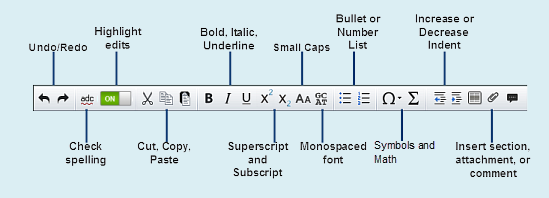

You can reformat text using the ArticleExpress Edit toolbar or with your keyboard.
Note: Depending on your specific configuration or your role in ArticleExpress, some of these commands may not be available.

The keyboard shortcuts are:
| For this effect | Press |
|---|---|
| Undo last action | CTRL+Z |
| Redo last action | CTRL+Y |
| Bold | CTRL+B |
| Italic | CTRL+I |
| Underline | CTRL+U |
| Superscript | CTRL+SHIFT+> (Press again to return to Normal text.) |
| Subscript | CTRL+SHIFT+< (Press again to return to Normal text.) |
| Insert Scheme Citation | CTRL+ALT+S |
| Insert Affiliation | CTRL+ALT+A |
| Insert Reference Citation | CTRL+ALT+C |
formattext.htm | Copyright © 2015 Dartmouth Journal Services All Rights Reserved.